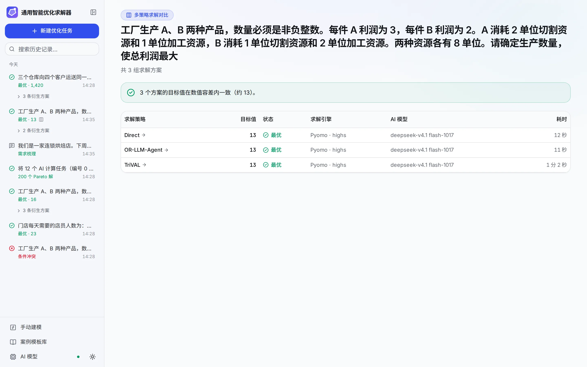

方法与模型对比对同一题面运行多个配置，并把结果和用量放在一张表中。它适合了解某个方法怎样处理自己的问题，以及更换模型预设后流程有什么变化。
在手动建模中启动#
在“手动建模”页切换到“多方案对比”，或在“求解偏好与高级设置”中打开“多方案对比”开关，勾选方法或模型预设，选择共同的库与后端。一次最多启动12个运行。确认题面与附件后开始，对比页显示每个运行的进度。
可以先固定预设比较 Direct、LLMOPT、TriVAL；也可以固定方法，选择两个模型预设。每一行都可打开完整过程。

比较表里有什么#
| 信息 | 用途 |
|---|---|
| 方法和模型预设 | 识别配置组合 |
| 状态与目标值 | 查看实际计算结果 |
| 用时 | 观察整个运行耗时 |
| LLM调用数与token | 了解生成、验证与修复用量 |
| 运行链接 | 阅读公式、代码、步骤和输入 |
目标值一致时，对比页给出对应提示。点击一行可继续检查某个约束、代码版本或验证反馈。
按一个问题追踪差异#
以“B至少生产3件”的生产题为例，依次在各运行中找到最低产量规则、实际变量与复核记录：
- 数学模型中找到
B≥3。 - 代码中找到对应约束和整数域。
- 结果中读取 A、B 与利润。
- 过程里查看是否发生修复，以及具体改了什么。
这样能将表中的调用数和耗时联系到实际步骤。不同流程可能一次完成，也可能通过检查找到并修正某项表达。
输入与记录怎样保留#
每个运行保存相同题面和附件的输入快照，以及自己的配置、过程与结果。可以给整组关联的运行添加标签，并在备注中写下发现。
平台的并发和每小时运行额度决定启动与排队情况。部分运行启动失败时，对比页保留已启动项，并显示其余项的启动信息。额度设置见配置与用量。
从比较走向下一步#
找到需要进一步检查的运行后，可以打开模型、导出报告，或从它继续调整业务条件。各方法的结构、参数与逐步案例见建模方法；模型服务连接见预设模型。